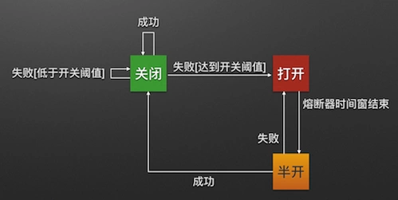

本文是学习熔断器后的一些总结，之前就对微服务相关的东西进行一些了解，其中熔断器肯定是需要了解的。
为什么需要熔断器呢？
分布式系统中经常会出现某个基础服务不可用造成整个系统不可用的情况, 这种现象被称为服务雪崩效应。为了应对服务雪崩，一种常见的做法是手动服务降级(将一些不重要 或 不紧急的服务或任务进行服务的 延迟使用 或 暂停使用)。而Hystrix（熔断器）的出现，给我们提供了另一种选择。
前言
对熔断器更多详细的介绍，我就不一一介绍了，可以直接查看这篇文章，对熔断器的介绍非常详细。
防雪崩利器：熔断器 Hystrix 的原理与使用。
直接引入熔断器模式具体详细定义：
熔断器模式
熔断器模式定义了熔断器开关相互转换的逻辑：

1
2
3
4
5
6
7
8
| Closed
/ \
Half-Open <--> Open
初始状态是：Closed，指熔断器放行所有请求。
达到一定数量的错误计数，进入Open 状态，指熔断发生，下游出现错误，不能再放行请求。
经过一段Interval时间后，自动进入Half-Open状态，然后开始尝试对成功请求计数。
进入Half-Open后，根据成功/失败计数情况，会自动进入Closed或Open。
|
服务的健康状况 = 请求失败数 / 请求总数.
熔断器开关由关闭到打开的状态转换是通过当前服务健康状况和设定阈值比较决定的.
- 当熔断器开关关闭时, 请求被允许通过熔断器. 如果当前健康状况高于设定阈值, 开关继续保持关闭. 如果当前健康状况低于设定阈值, 开关则切换为打开状态.
- 当熔断器开关打开时, 请求被禁止通过.
- 当熔断器开关处于打开状态, 经过一段时间后, 熔断器会自动进入半开状态, 这时熔断器只允许一个请求通过. 当该请求调用成功时, 熔断器恢复到关闭状态. 若该请求失败, 熔断器继续保持打开状态, 接下来的请求被禁止通过.
熔断器的开关能保证服务调用者在调用异常服务时, 快速返回结果, 避免大量的同步等待. 并且熔断器能在一段时间后继续侦测请求执行结果, 提供恢复服务调用的可能.
代码学习
代码来自于bigpipe，circuit_breaker.go。
1
2
3
4
5
6
7
8
9
10
11
12
13
14
15
16
17
18
19
20
21
22
23
24
25
26
27
28
29
30
31
32
33
34
35
36
37
38
39
40
41
42
43
44
45
46
47
48
49
50
51
52
53
54
55
56
57
58
59
60
61
62
63
64
65
66
67
68
69
70
71
72
73
74
75
76
77
78
79
80
81
82
83
84
85
86
87
88
89
90
91
92
93
94
95
96
97
98
99
100
101
102
103
104
105
106
107
108
109
110
111
112
113
114
115
116
117
118
119
120
121
122
123
124
125
126
127
128
129
130
131
132
133
134
135
136
137
138
139
140
141
142
143
144
145
146
147
148
149
150
151
152
153
154
155
156
157
158
159
160
161
162
163
164
165
166
167
168
169
170
171
172
173
174
175
176
177
178
179
180
181
182
183
184
185
186
187
188
189
190
191
192
193
194
195
196
197
198
199
200
201
202
| package client
import (
"bigpipe/config"
"bigpipe/util"
"math/rand"
"sync"
)
type StatsBucket struct {
success int
fail int
}
type HealthStats struct {
buckets []StatsBucket
curTime int64
minStats int
healthRate float64
}
type CircuitStatus int
const (
CIRCUIT_NORMAL CircuitStatus = 1
CIRCUIT_BREAK = 2
CIRCUIT_RECOVER = 3
)
type CircuitBreaker struct {
mutex sync.Mutex
healthStats *HealthStats
status CircuitStatus
breakTime int64
breakPeriod int
recoverPeriod int
}
func createHealthStats(info *config.CircuitBreakerInfo) (healthStats *HealthStats) {
healthStats = &HealthStats{
minStats: info.MinStats,
healthRate: info.HealthRate,
}
healthStats.buckets = make([]StatsBucket, info.WinSize)
healthStats.resetBuckets(healthStats.buckets[:])
healthStats.curTime = util.CurUnixSecond()
return
}
func (healthStats *HealthStats) resetBuckets(buckets []StatsBucket) {
for idx, _ := range buckets {
buckets[idx].success = 0
buckets[idx].fail = 0
}
}
func (healthStats *HealthStats) shiftBuckets() {
now := util.CurUnixSecond()
timeDiff := int(now - healthStats.curTime)
if timeDiff <= 0 {
return
}
if timeDiff >= len(healthStats.buckets) {
healthStats.resetBuckets(healthStats.buckets[:])
} else {
healthStats.buckets = append(healthStats.buckets[:0], healthStats.buckets[timeDiff:]...)
for i := 0; i < timeDiff; i++ {
healthStats.buckets = append(healthStats.buckets, StatsBucket{})
}
}
healthStats.curTime = now
}
func (healthStats *HealthStats) success() {
healthStats.shiftBuckets()
healthStats.buckets[len(healthStats.buckets)-1].success++
}
func (healthStats *HealthStats) fail() {
healthStats.shiftBuckets()
healthStats.buckets[len(healthStats.buckets)-1].fail++
}
func (healthStats *HealthStats) isHealthy() (bool, float64) {
healthStats.shiftBuckets()
success := 0
fail := 0
for _, bucket := range healthStats.buckets {
success += bucket.success
fail += bucket.fail
}
total := success + fail
if total == 0 {
return true, 1
}
rate := float64(success) / float64(total)
if total < healthStats.minStats {
return true, rate
}
return rate >= healthStats.healthRate, rate
}
func CreateCircuitBreaker(info *config.CircuitBreakerInfo) (circuitBreaker *CircuitBreaker) {
circuitBreaker = &CircuitBreaker{
healthStats: createHealthStats(info),
status: CIRCUIT_NORMAL,
breakTime: 0,
breakPeriod: info.BreakPeriod,
recoverPeriod: info.RecoverPeriod,
}
return
}
func (circuitBreaker *CircuitBreaker) Success() {
circuitBreaker.mutex.Lock()
defer circuitBreaker.mutex.Unlock()
circuitBreaker.healthStats.success()
}
func (circuitBreaker *CircuitBreaker) Fail() {
circuitBreaker.mutex.Lock()
defer circuitBreaker.mutex.Unlock()
circuitBreaker.healthStats.fail()
}
func (circuitBreaker *CircuitBreaker) IsBreak() (isBreak bool, isHealthy bool, healthRate float64) {
circuitBreaker.mutex.Lock()
defer circuitBreaker.mutex.Unlock()
now := util.CurUnixSecond()
breakLastTime := now - circuitBreaker.breakTime
isHealthy, healthRate = circuitBreaker.healthStats.isHealthy()
isBreak = false
switch circuitBreaker.status {
case CIRCUIT_NORMAL:
if !isHealthy {
circuitBreaker.status = CIRCUIT_BREAK
circuitBreaker.breakTime = now
isBreak = true
}
case CIRCUIT_BREAK:
if breakLastTime < int64(circuitBreaker.breakPeriod) || !isHealthy {
isBreak = true
} else {
circuitBreaker.status = CIRCUIT_RECOVER
}
case CIRCUIT_RECOVER:
if !isHealthy {
circuitBreaker.status = CIRCUIT_BREAK
circuitBreaker.breakTime = now
isBreak = true
} else {
if breakLastTime >= int64(circuitBreaker.breakPeriod+circuitBreaker.recoverPeriod) {
circuitBreaker.status = CIRCUIT_NORMAL
} else {
passRate := float64(breakLastTime) / float64(circuitBreaker.breakPeriod+circuitBreaker.recoverPeriod)
if rand.Float64() > passRate {
isBreak = true
}
}
}
}
return
}
|
async_client.go， 在调用接口时，对调用成功与否进行统计，当错误率大于我们初设的阀值时，其接口服务进入熔断的状态。
1
2
3
4
5
6
7
8
9
10
11
12
13
14
15
16
17
18
19
20
21
22
23
24
25
26
27
28
29
30
31
32
33
34
35
36
37
38
39
40
41
42
43
44
45
46
47
48
49
50
51
52
53
54
55
56
57
58
59
60
61
62
63
64
65
66
67
| .....
func (client *AsyncClient) notifyCircuitBreaker(success bool) {
if client.circuitBreaker != nil {
if success {
client.circuitBreaker.Success()
} else {
client.circuitBreaker.Fail()
}
}
}
func (client *AsyncClient) callWithRetry(message *proto.CallMessage) {
success := false
for i := 0; i < client.retries+1; i++ {
...
req, err := http.NewRequest("POST", message.Url, strings.NewReader(message.Data))
.....
if rErr != nil {
client.notifyCircuitBreaker(false)
log.WARNING("HTTP调用失败（%d）（%dms）：（%v）（%v）", i, reqUsedTime, *message, err)
continue
}
// 不读应答体
response.Body.Close()
// 判断返回码是200即可
if response.StatusCode != 200 {
client.notifyCircuitBreaker(false)
log.WARNING("HTTP调用失败（%d）（%dms）：(%v)，(%d)", i, reqUsedTime, *message, response.StatusCode)
continue
}
success = true
client.notifyCircuitBreaker(true)
log.INFO("HTTP调用成功（%d）（%dms）:（%v）", i, reqUsedTime, *message)
break
}
....
}
func (client *AsyncClient) Call(message *proto.CallMessage, termChan chan int) {
stats.ClientStats_rpcTotal(&message.Topic)
// 熔断控制
if client.circuitBreaker != nil {
CIRCUIT_LOOP:
for {
isBreak, isHealthy, healthRate := client.circuitBreaker.IsBreak()
if isBreak { // 熔断则等待1秒再检查
select {
case <-termChan: // 来自调用方的关闭信号, 为了避免熔断影响退出时间, 一旦调用方关闭则暂停熔断控制, 快速消化剩余流量
log.DEBUG("Client调用方通知关闭, 熔断逻辑失效.")
break CIRCUIT_LOOP
case <-time.After(1 * time.Second): // 正常情况下间隔1秒确认熔断状态
...
// 启动协程发送请求
go client.callWithRetry(message)
}
....
|
结语
也算是补上了这个点，算是看了一些资料，学习了，难得闲的下来。
另外补一个索尼熔断器的Go代码，https://reading.developerlearning.cn/articles/sony-gobreaker/readme/。
本文标题：通过代码学习熔断器
文章作者：小师
发布时间：2020-01-29
最后更新：2022-05-04
原始链接：chunlife.top/2020/01/29/通过方法学习熔断器/
版权声明：本站所有文章均采用知识共享署名4.0国际许可协议进行许可